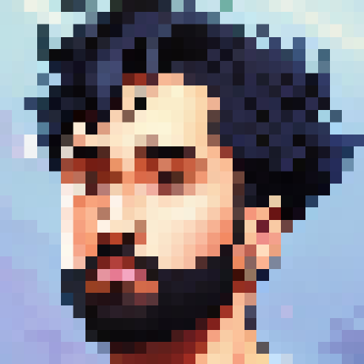

kartik pradeepan
> currently a computational neuroscience researcher
> 5+ years experience developing complete data model pipelines
> experienced data storyteller to technical and non-technical stakeholders